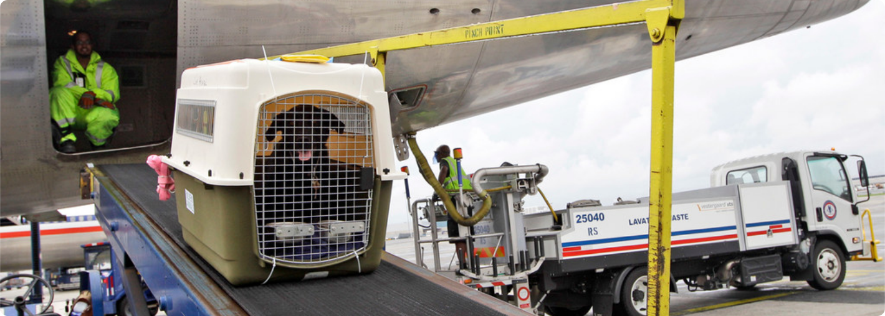

Перевіз тварини в багажному відділенні
Візьміть свого улюбленця в подорож!
Ви можете взяти свою собаку, кота або тхора на борт наших літаків. Ми можемо взяти на борт наших літаків обмежену кількість домашніх тварин, тому придбання послуги залежить від поточної наявності місць. Перевірте це під час бронювання квитка на сайті lot.com або пізніше, за 12 годин до вильоту, в розділі «Мої бронювання»
Зверніть увагу, що якщо ваш вихованець подорожує в багажному відсіку, температура буде відповідно відрегульована. Тож не переживайте, подорожуючи таким чином зі своїм улюбленим вихованцем!
Домашні тварини в багажному відсіку
Якщо ви перевозите домашнього улюбленця в багажному відсіку, переконайтеся, що йому зручно в дорозі.
Вага тварини, що перевозиться в багажному відділенні разом з контейнером, не повинна перевищувати 99
кг.
В одному контейнері допускається провезення однієї дорослої тварини, крім домашніх тварин у віці
макс. до 6 місяців, для яких їх кількість не може перевищувати трьох тварин на один контейнер.
Пам'ятайте, що контейнер, в якому буде перевозитися тварина, повинен бути:
● достатньо великим, щоб тварина могла вільно переміщатися і могла стояти, повертатися і лежати в ньому,
● чистим, щільним і добре закритим, а його основа зсередини вкрита усотувальним матеріалом,
● позначені відповідною наліпкою та відповідними інструкціями (як поводитися з твариною),
● укомплектований місткістю з водою і їжею,
● вентильованим як мінімум з трьох сторін,
● виготовлений зі скловолокна, металу, жорстка пластика, масиву дерева або фанери, без прикріплених кілець (якщо є, їх необхідно зняти під час реєстрації).
УВАГА!Клітка не може бути зроблена повністю зі зварної чи дротяної сітки – клітки цього типу не підходять для перевезення повітряним транспортом. Якщо контейнер занадто малий або не відповідає зазначеним вище вимогам правил IATA, ми залишаємо за собою право відмовити в перевезенні вашого домашнього улюбленця під час реєстрації.
Збори за провезення тварин
Збори за провезення тварини на борту – це не лише процедура, а й наша згуртована турбота про вашого
чотирилапого друга. Дякуємо за ваше розуміння та співпрацю. Ви побачите точну суму комісії під час
створення бронювання або в розділі
«Мої бронювання».
Розміри транспортера
У зв’язку з тим, що в нашому парку існує
кілька типів літаків, розміри транспортера варіюються. Прийняті розміри транспортера:
● для літака B787 Dreamliner: 125/96/64 cm*;
● для літака B737, 7M8: 137/114/86 cm*;
● для літака E70, E75, E90: 120/102/71 cm*;
● для літака DH4: 170/70/143 cm*
Обмеження на перевезення собак
і котів брахіцефальних порід.
Перед тим, як забронювати авіабілет, перевірте, чи не знаходиться порода Вашої собаки або кота в
складеному списку.
Брахіцефалічні породи собак:
● американський стаффордширський тер’єр (стаффордширський бультер’єр)
● американський піт бультер’єр
● боксер
● бостонський тер’єр
● пті-брабансон/гладкошерстий гриффон
● бульдог (усі породи)
● бульмастиф
● кане-корсо
● кавалер-кінг-чарльз-спанієль
● чихуахуа
● японський хін
● чау-чау
● американський кокер-спанієль
● бордоський дог/французький мастиф
● бельгійський гриффон
● брюссельський гриффон
● кінг-чарльз-спанієль
● лхасский апсо
● мастиф (усі породи)
● мопс (усі породи)
● пекінес
● аффенпинчер
● шар-пей
● ши-тцу
● японський спанієль
● тібетський спанієль
Брахіцефалічні породи котів:
● перський
● екзотичний
● гімалайський
● британський короткошерстий
● шотландський висловухий/скоттіш-фолд
Обмеження при транспортуванні в опалюваному вантажному відсіку поширюється також на схрещені з
вищевказаними породи, а також на тварин, що мають характерні риси брахіцефалічних порід (приплюснута
морда).
Що приготувати перед поїздкою з
домашніми тваринами?
Не забудьте підготувати перед поїздкою:
● діючу картку вакцинації (проти сказу),
● спеціальний паспорт (видається ветеринаром) з описом кольору, породи, статі тварини разом з
номером
мікрочіпа або татуювання,
● правильно підібраний транспортний контейнер,
● наявний імплантований мікрочіп.
Дозволено перевозити тварин у віці мін. 3 місяці або після закінчення мін. 21 дня від дати останньої
діючої вакцинації проти сказу.
Як підготувати тварину до авіаперельотів?
Наші поради:
● За кілька днів до поїздки привчіть домашнього улюбленця до контейнера, йому буде легше переносити
поїздку,
● Перед поїздкою прикріпіть етикетку збоку контейнера з ім'ям вашого домашнього улюбленця і
інструкціями з годування, Реєстрація домашньої тварини може тривати довше, тому вам слід з'явитися
на реєстрацію в аеропорту не менше ніж за 3 години до вильоту.
● Перед рейсом тварину слід заздалегідь вивести на прогулянку, Не поїть і не годуйте домашнього
улюбленця за кілька годин до вильоту,
● Перед вильотом дайте зовсім трохи води, Щоб забезпечити безпеку вашого домашнього улюбленця,
кладіть
поводок і намордник зовні контейнера або в ручну поклажу.
● Седацію тварини слід проводити після консультації з ветеринаром.